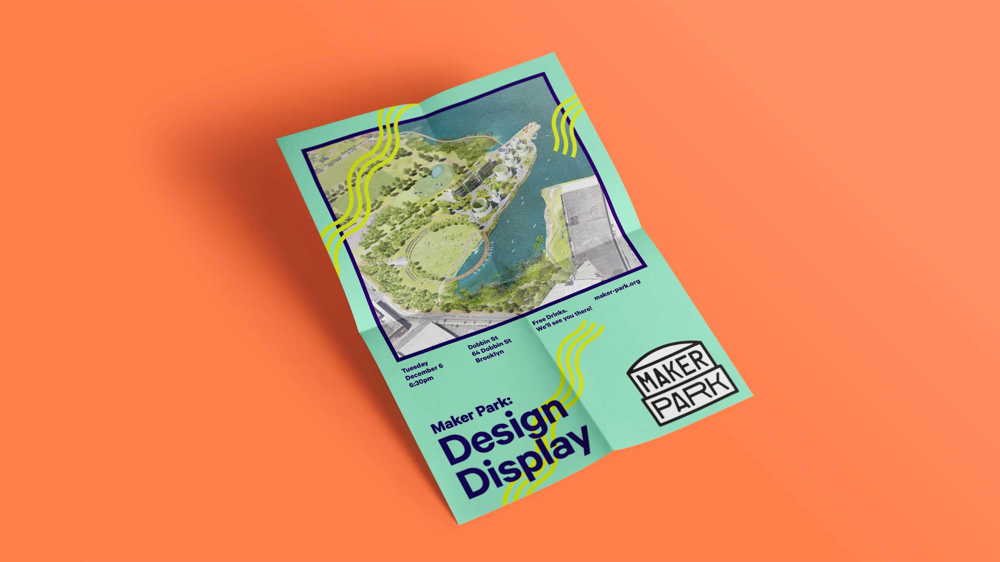
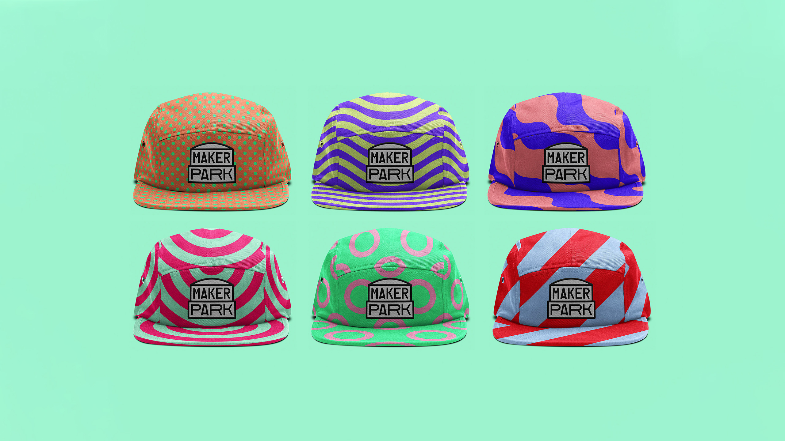
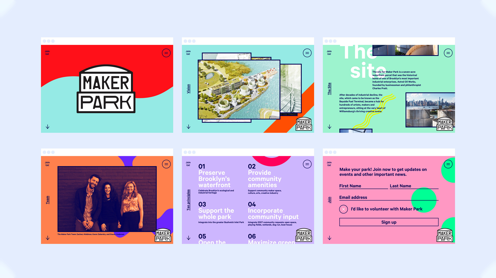
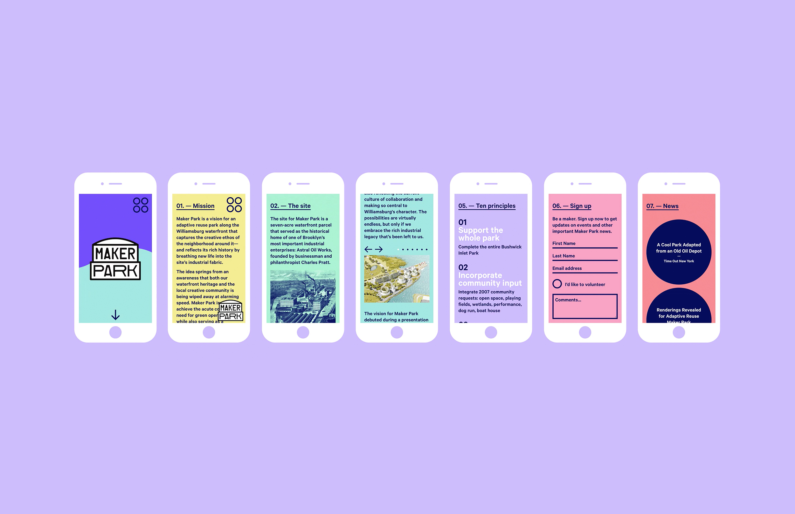
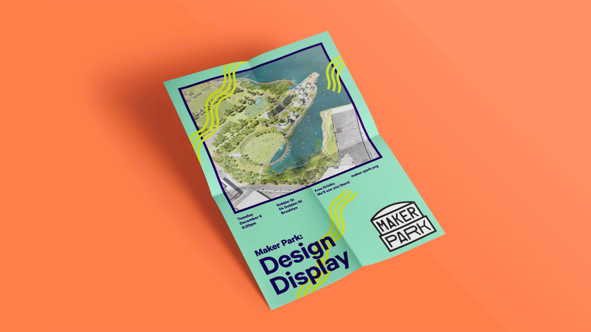
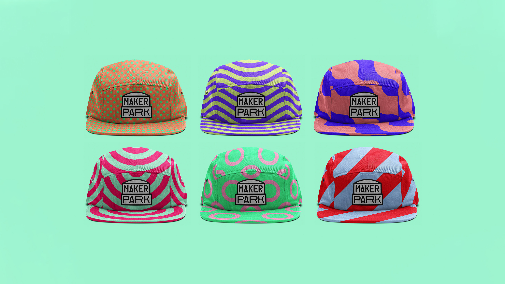
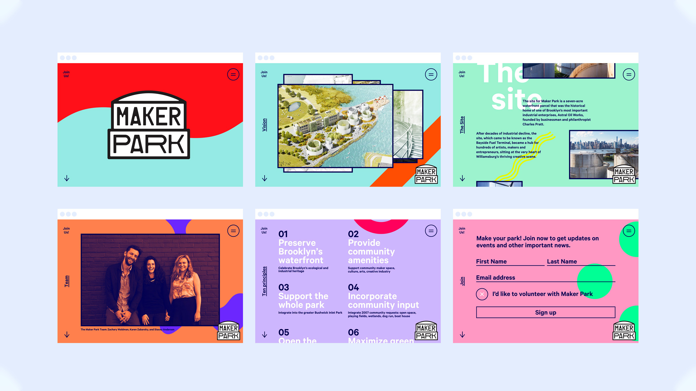
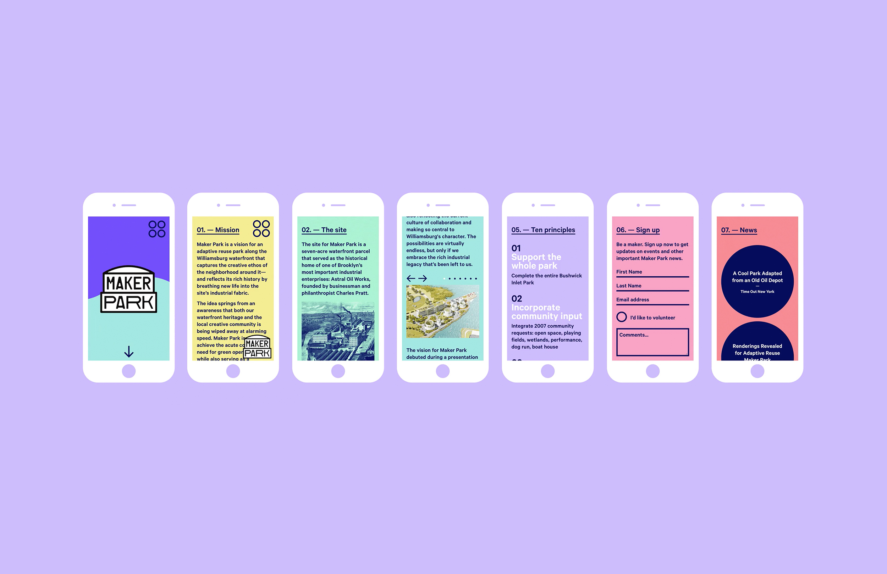
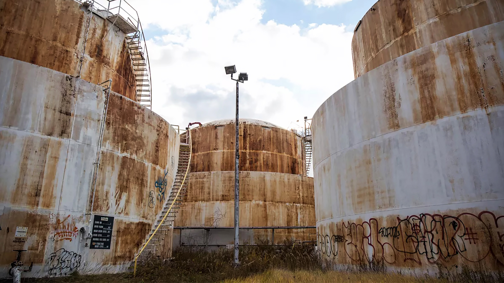
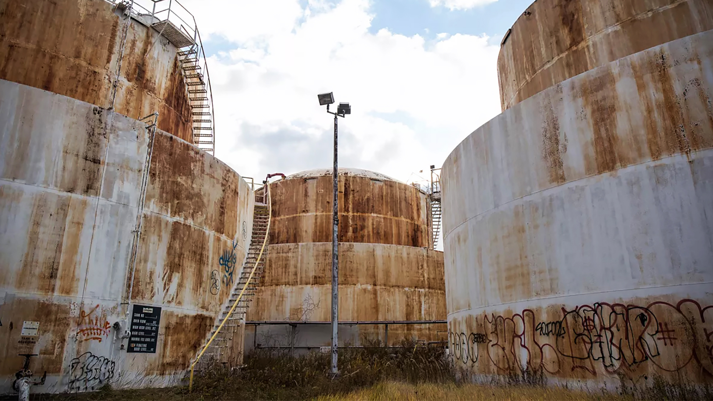

Maker Park
The identity for a proposed adaptive reuse park along the Williamsburg, Brooklyn, waterfront captures the creative spirit of the neighborhood. Maker Park is a proposed adaptive reuse park that will revitalize an unused industrial site on the waterfront in Williamsburg, Brooklyn. Conceived by a group of community activists, the initiative will transform the seven-acre site formerly known as the Bayside Fuel Terminal into a hub for artists, makers and entrepreneurs. A bright, colorful identity for the park that captures the creative spirit of the neighborhood and helps raise the plan’s profile as it seeks support.
- Role ......................... Assistant Designer
- Creative Direction ........... Luke Hayman
- Team ......................... Simon Blockley
- Studio ....................... Pentagram
 







 
